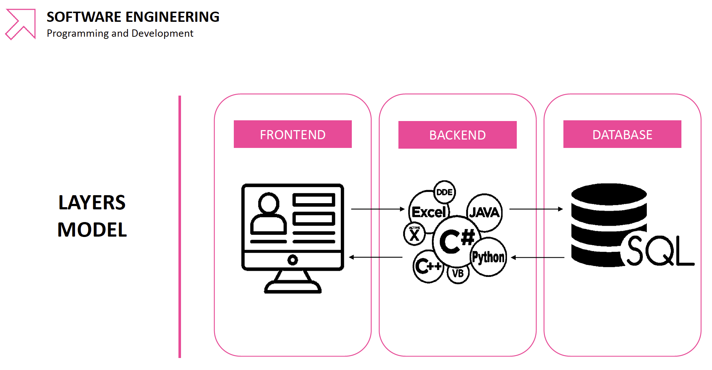

Topics covered:
Big data is a huge volume of structured or unstructured information. It is usually a collection of information that is so large that it is difficult to just search through, analyse or store without the use of some programming. Data is captured and entered into a database where it is stored. The data in the database can then be analysed. A database is often represented by the image of a cylindrical container:
This course focuses on the database and storage aspects of data science.
The database is where the data is stored and we are learning to access and
process the data using the SQL (Structured Query Language)
programming language. SQL can be reffered to as either the individual
letters (so would be spoken as
Big data is often used in software engineering and in data analysis.
In software engineering, the database supports the back end, which in turn supports the front end:
In data science, SQL and databases are used only in certain steps of the process. In the 6 step process illustrated below, SQL is used mainly in steps 2, 3 and 4.
There are numerous different job roles that would benefit from knowledge of SQL and databases. A few of these are listed in the image below:
The first homework task of this week is to go through this list and identify the job role closest to where I would like to be and then write a paragraph about my desired job role and how I would like to use my data, SQL and DB skills. The following is the paragraph I have written for this task:
MY PARAGRAPH GOES HERE
As detailed in section 1.1, databases are a virtual container where data is stored and is often represented by the cylindrical storage container symbol. A database contains lots of tables, which can relate to each other.
As detailed in section 1.1, SQL is the programming language that is used to access the information stored in the database. You can choose to extract only the parts of the database that you are interested in:

The RDBM is a type of management system for databases. A relational database is just a type of database where data in one part of the database matches with data in another part of the database. It is usually organised in tables.
As would be expected, each table consists of columns and rows. The rows are called records and each column is given a data type (e.g. integer, character—see the following section).
Different data types can be used in SQL. You are required to declare the type of data that a column will contain in a SQL table. The following table details some of the different types of data that you can work with in SQL. For a more comprehensive list, see the w3schools website.
| Data type | Details |
|---|---|
CHAR(size) |
These are strings of a fixed length. The length of the string is typed
as an integer in the brackets where it says size, up to a maximum of 255
characters. (Recap—strings are mixed characters as they are typed
and can contain any combinations of numbers, letters and specical
characters, so long as they are supported by the language in use.) E.g.
CHAR(50) would be a string with 50 characters. If any other
number of characters is entered, it will return an error.
|
VARCHAR(size) |
This is the same as the previous data type except a string of any length will be accepted, up to a maximum of the number of characters specified in the brackets. |
BINARY(size) |
This is the same as CHAR(size) so is fixed length. But rather than
taking any characters, it will only accept binary byte strings (so zeros
and ones). Here the |
FLOAT(p) |
We encountered floats in Python. These are floating point numbers, which
are decimal numbers. The concept is a bit more complex than that but for
now just think of these as decimal numbers where |
INTEGER |
These are for whole numbers and can also be shortened to INT.
You can also add a size in brackets if you want a fixed number of digits.
This can be shortened to INT.
|
DECIMAL(m, d) |
This is used for decimal numbers where the decimal point is fixed in
place (unlike floats where is can be moved). |
BOOLEAN |
This is used where values can be true or false. A value of 0 is used for
false and 1 is used for true. The shortened form BOOL also
works.
|
DATE |
This is for a date in the format: YYYY-MM-DD. |
TIME |
This is used for time in the format: hh:mm:ss. |
TIMESTAMP |
This is for both the time and date in the format: YYYY-MM-DD hh:mm:ss. |
In order to get information (i.e. data) out of a database, we need to ask it questions. This is called querying. These queries are written in the programming language SQL. The syntax for a basic SQL query asking for one column to be returned from a table is shown here:
Here the keyword SELECT is used. Although SQL keywords are not case sensitive, it is convention to write them in upper-case (e.g. SELECT rather than select). This SELECT statement is often followed by a list of columns (as their column names) that are to be retrieved. A comma is placed between each column name (no comma is added after the last column name). This is then followed by a FROM statement, which specifies the name of the table that contains the columns you have asked for.
Here is an example of this query in action:
SELECT
column1,
column2
FROM
table1;
When we write more complicated queries than the ones shown so far, we need to keep track of which tables each column comes from. It can get especially confusing if you are trying to get data from two different tables that each have a column with the same name (e.g. a column called column1 existing in both table1 and table2—you need to be able to specify which table you are taking column1 from). It is good practice to always specify the table, even if you are only using one table. To do this, the following syntax is used:
SELECT
table1.column1,
table1.column2
FROM
table1;
In SQL, an alias is a temporary name you give to a table or column for a particular query. It doesn't overide the actual name of the table or column and only exists within the specific query that you assign it. They are used to reduce the amount of typing required.
In the following example, several aliases are used. table1 has the alias t1 and the columns are given the aliases c1 and c2.
SELECT
t1.column1 AS c1,
t1.column2 AS c2
FROM
table1 AS t1;
The wildcard (*) is used to select all the columns in a table. It is considered bad practice to use it so it should only be used when exploring data. The full syntax should be written in an query you want to save for future use. The following shows how you would use it in a query:
SELECT *
FROM table1
Although you can create databases with SQL itself, it isn't something that is done very often. To create a database and give it a name you would use the following syntax:
CREATE DATABASE database_name;
Before you can do anything with any database, whether you want to add more data to the database or query a database, you need to specify which database you are wanting to use. This is done with the following syntax:
USE database_name;
To create a table, you must give the table a name and declare the names and data types of each column in the table. The column details are put inside brackets and each column is separated with a comma. The following syntax is used to create a table:
CREATE TABLE table_name
(column1 DATATYPE,
column2 DATATYPE,
column3 DATATYPE);
No entry in a table can be just left blank (this is the same as my experience
of R). If there is no data for a particular cell, it will be classified as
NULL. When you create a table, you can tell it whether to
accept null values for a particular column or not. This information is added
after the data type. In the following example,
CREATE TABLE table_name
(column1 DATATYPE NOT NULL,
column2 DATATYPE,
column3 DATATYPE);
Once a table has been created using the above method, we can then start adding entries into the table. You first have to specify which table you are adding the entries to, then type out the column names of that table in brackets, before adding the new values. Each record (row) is put in their own brackets. Values in a record (i.e. the entry for each column for one row) are separated by commas. The records (rows) are also separated by a comma. The following code adds three records to a table that contains three columns.
INSERT INTO table_name
(column1, column2, column3)
VALUES
(value1, value2, value3),
(value1, value2, value3),
(value1, value2, value3),
(value1, value2, value3);
This might be a bit clearer to see with a worked example. The following code
is what I wrote in the lesson and creates then populates a table. Note that
the two dashes (--) can be used to write comments.
CREATE DATABASE bakery;
USE DATABASE bakery;
-- Create table to contain details of the sweet products.
CREATE TABLE sweet(
id INT NOT NULL,
item_name VARCHAR(50) NOT NULL,
price FLOAT(2) NOT NULL
);
-- Populate the sweet table.
INSERT INTO sweet
(id, item_name, price)
VALUES
(1, 'doughnut', 0.5),
(2, 'croissant', 0.75),
(3, 'painauchocolat', 0.55),
(4, 'cinnamon swirl', 0.45),
(5, 'cannoli', 0.88),
(6, 'apple tart', 1.12);
-- Create a table for the savoury products.
CREATE TABLE savoury(
id INT NOT NULL,
item_name VARCHAR(50) NOT NULL,
price FLOAT(2),
main_ingredient VARCHAR(50)
);
-- Populate the savoury table.
INSERT INTO savoury
(id, item_name, price, main_ingredient)
VALUES
(1, 'meat pie', 1.25, 'pork'),
(2, 'sausage roll', 1, null),
(3, 'pasty', 2.45, 'beef');
-- Quickly check the tables have been created correctly.
SELECT * FROM sweet;
SELECT * FROM savoury;